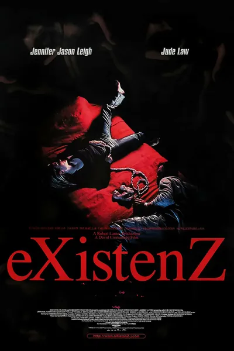

1999
Триллер, Фантастика
Аллегра Геллер, величайший геймдизайнер будущего, представляет eXistenZ: биопорты, вживленные в позвоночник, и миры, питающиеся нервной системой игрока. Покушение, совершенное прямо во время демонстрации, превращает презентацию в бегство, а бегство — в игру, где никто не знает, чей сценарий сейчас разыгрывается. Кроненберг заменяет провода плотью и задается вопросом: если реальность держится на уверенности «я здесь», то что происходит, когда две такие уверенности оказываются вложенными друг в друга? Научная фантастика о виртуальности на уровне плоти, а не очков виртуальной реальности.
Описание на английском
Allegra Geller, the greatest game designer of the future, demos eXistenZ: bio-ports spliced into spines and worlds that feed on the player's nervous system. An attempt on her life mid-demo turns the presentation into an escape, and the escape into a game where no one knows whose script is running. Cronenberg swaps wires for flesh and asks: if reality rests on the certainty of 'I am here', what happens when two such certainties are nested inside each other? Sci-fi about virtuality at the level of flesh, not goggles.